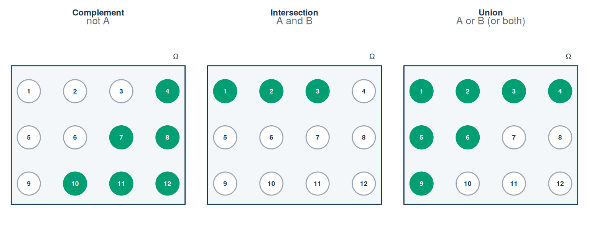
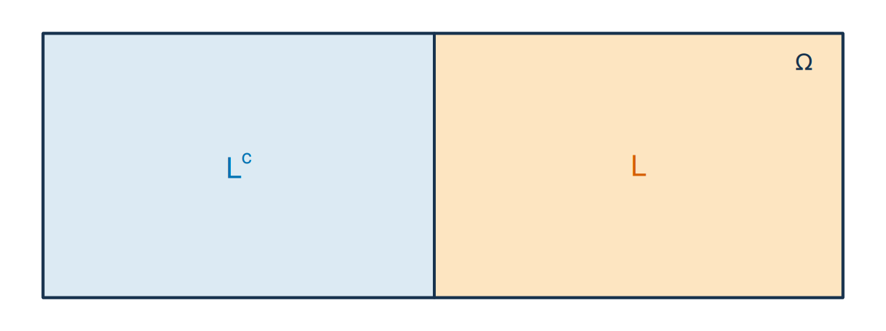

sharks <- read.csv("data/shark_tank_teaching.csv", stringsAsFactors = FALSE)
table(sharks$season)Lecture 2: Probability foundations and random variables
By the end of Lecture 2, you can
- define a random experiment, outcome, sample space, and event;
- use complements, intersections, unions, and disjointness;
- state the probability rules and compute probabilities from a counts table;
- recognise a partition of the sample space;
- distinguish empirical proportions from model probabilities and from forecasts;
- define a random variable informally and state its support.
Driving question
Investors think in chances: how likely is a deal, how likely is a pitch from the show’s later, bigger years, how likely are both at once. Before we can compute any such chance, we need a precise language for “how likely” — that language is today’s lecture.
Pick one recorded pitch at random. What is the chance it reached a deal, came from a late season, or both — and what do those numbers mean beyond this file?
Before class
Total preparation time: about 30 minutes.
Video preparation (20 minutes)
Watch Sample Space and Probability Axioms, then watch Definition of Random Variables. Be ready to define an outcome, sample space, event, and random variable. All links are also listed in the External Video Guide.
Reactivate (5 minutes). In Lecture 1 you built frequency tables for the Shark Tank data. Rebuild the season frequency table — one line of R once the data are loaded:
Predict (5 minutes). Answer the one-click Mentimeter question posted on Canvas before you come to class: is \(P(\text{deal or late season})\) larger or smaller than \(P(\text{deal}) + P(\text{late season})\)? Commit to an answer; the lecture resolves it.
If set notation, complements, unions, or intersections are unfamiliar, review Mathematics Refresher: sets and events.
In class
The session opens with the usual four-minute entry quiz on the prep videos, then turns to the driving question. The experiment behind the whole lecture: select one of the 1,441 recorded pitches uniformly at random.
A probability model begins with possible outcomes
MIT explanation (review): 01.2 Sample Space.
Probability starts by specifying exactly what may happen. A probability model needs a process, a list of complete possible results, and events that describe which results matter for the question.
A random experiment is a process whose outcome is not known in advance. The word random does not mean “unstructured.” It means the model does not specify in advance which possible outcome will occur.
- An outcome, written \(\omega\), is one complete possible result.
- The sample space, written \(\Omega\), is the set of all possible outcomes.
- An event is a specified subset of \(\Omega\) to which the model assigns a probability. It occurs when the realised outcome belongs to that subset.
The distinction is easiest to read from the whole-to-part structure:
| Object | Question it answers | Shark Tank example |
|---|---|---|
| experiment | What is done? | Select one of the 1,441 records uniformly |
| outcome \(\omega\) | Which complete result occurred? | One complete selected pitch record |
| sample space \(\Omega\) | Which complete results were possible? | The set of all 1,441 records |
| event \(A\) | Which outcomes count as “yes” for this question? | The subset of records with an on-air deal |
For a single roll of a fair six-sided die,
\[\Omega=\{1,2,3,4,5,6\}.\]
The event \(E=\{2,4,6\}\) means “an even result.” The outcome \(\omega=4\) belongs to \(E\), so \(E\) occurs when 4 is rolled. The number 4 is an outcome; the singleton set \(\{4\}\) is an event.
Check: is “the record with pitch_id 7” an outcome or an event?
The record itself is one complete possible result of the selection, so it is an outcome. The description “the selected pitch is the record with pitch_id 7” picks out the singleton set containing that record, and a set of outcomes is an event. The same distinction as 4 versus \(\{4\}\) on the die.
An empirical selection experiment
Define the experiment as select one of the 1,441 recorded pitches uniformly at random. The sample space is the set of 1,441 pitch records. Define:
- \(D\): the selected pitch reached an on-air deal;
- \(L\): the selected pitch appeared in a late season (Seasons 9–16).
Making the selection uniform means every record has probability \(1/1441\). Consequently, event probabilities equal relative frequencies in this fixed dataset. This does not imply the same probabilities for future entrepreneurs — the caveat box below returns to this point.
Combining events
Events are sets of outcomes. Set notation therefore gives us a precise way to describe how events are combined.
| Notation | Name | Meaning |
|---|---|---|
| \(A^c\) | complement | \(A\) does not occur |
| \(A\cap B\) | intersection | both \(A\) and \(B\) occur |
| \(A\cup B\) | union | \(A\), \(B\), or both occur |
| \(A\subseteq B\) | subset | every outcome in \(A\) is also in \(B\) |
| \(A\cap B=\varnothing\) | disjoint | \(A\) and \(B\) cannot occur together |
To make the notation concrete, suppose one number is selected at random from
\[\Omega=\{1,2,\ldots,12\}.\]
Define \(A=\{1,2,3,5,6,9\}\) and \(B=\{1,2,3,4\}\). Each panel of Figure 2.1 shows the same sample space. A green circle means that the outcome belongs to the event named above the panel.
See the drawing code (optional, not exam material)
old_par <- par(no.readonly = TRUE)
par(mfrow = c(1, 3), mar = c(0.6, 0.35, 2.8, 0.35),
xaxs = "i", yaxs = "i")
omega <- 1:12
A <- c(1, 2, 3, 5, 6, 9)
B <- c(1, 2, 3, 4)
event_sets <- list(
setdiff(omega, A),
intersect(A, B),
union(A, B)
)
panel_titles <- c("Complement", "Intersection", "Union")
panel_meanings <- c("not A", "A and B", "A or B (or both)")
draw_outcome_set <- function(selected, title, meaning) {
plot(NA, xlim = c(0.45, 4.55), ylim = c(0.35, 4.2), axes = FALSE,
xlab = "", ylab = "", asp = 1)
title(main = title, line = 1.2, cex.main = 1.05, col.main = "#17324D")
mtext(meaning, side = 3, line = 0.1, cex = 0.82, col = "#5B6976")
rect(0.62, 0.55, 4.38, 3.55, col = "#F4F7F9",
border = "#17324D", lwd = 1.4)
text(4.18, 3.76, expression(Omega), cex = 0.85, col = "#17324D")
x <- rep(1:4, 3)
y <- rep(3:1, each = 4)
is_selected <- omega %in% selected
symbols(x, y, circles = rep(0.25, 12), inches = FALSE,
bg = ifelse(is_selected, "#009E73", "white"),
fg = ifelse(is_selected, "#009E73", "#9AA7B2"),
lwd = 1.4, add = TRUE)
text(x, y, labels = omega,
col = ifelse(is_selected, "white", "#17324D"),
font = 2, cex = 0.82)
}
for (i in seq_along(event_sets)) {
draw_outcome_set(event_sets[[i]], panel_titles[i], panel_meanings[i])
}
par(old_par)
Thus \(A^c=\{4,7,8,10,11,12\}\), \(A\cap B=\{1,2,3\}\), and \(A\cup B=\{1,2,3,4,5,6,9\}\). Notice that or includes outcomes that are in both events: \(1,2,3\) belong to the union as well as the intersection.
The same grammar works for business events. In the selection experiment, let \(F\) be “the selected pitch is from the Food and Beverage industry” and \(T\) “from the Technology industry.” Each record lists exactly one industry, so \(F\) and \(T\) are disjoint: \(F\cap T=\varnothing\). The union \(F\cup T\) is “a food or technology pitch,” and \(F^c\) collects every pitch from any other industry. Nothing new is needed — only the sets have changed.
Disjoint does not mean independent. If two disjoint events both have positive probability, observing one makes the other impossible. Independence, introduced in Lecture 4, means that observing one event does not change the probability of the other.
The 2×2 counts table for deals and seasons
Everything this lecture computes comes from one table. The code constructs \(D\) and \(L\) exactly as defined above — run it yourself:
sharks <- read.csv("data/shark_tank_teaching.csv", stringsAsFactors = FALSE)
D <- sharks$deal_on_show == 1 # on-air deal
L <- sharks$season >= 9 # late season: Seasons 9-16
table(deal = D, late = L) late
deal FALSE TRUE
FALSE 330 229
TRUE 377 505Written with row and column totals:
| Early (\(L^c\), S1–8) | Late (\(L\), S9–16) | Total | |
|---|---|---|---|
| No deal (\(D^c\)) | 330 | 229 | 559 |
| Deal (\(D\)) | 377 | 505 | 882 |
| Total | 707 | 734 | 1441 |
Example 2.1 (Worked example: three events in words and symbols) From the table, describe each event in words and give its count.
- \(D^c\), “no on-air deal”: the top row, \(330 + 229 = 559\) records.
- \(D\cap L\), “deal and late season”: the single bottom-right cell, 505 records.
- \(D\cup L\), “deal, late season, or both”: every record except the top-left cell, \(1441 - 330 = 1111\) records — the deal row (882) plus the late column (734) minus the 505 records counted in both.
Probability rules
MIT explanation (review): 01.4 Probability Axioms.
A probability law assigns a number \(P(A)\) to each event \(A\). It must satisfy three rules:
- Non-negativity: \(P(A)\ge 0\) for every event \(A\).
- Normalisation: \(P(\Omega)=1\).
- Additivity: if \(A\) and \(B\) are disjoint, then \[P(A\cup B)=P(A)+P(B),\] and the same holds for any finite collection of pairwise disjoint events.
The first two rules set the probability scale: probability cannot be negative, and something in the sample space must occur. The third says that mutually exclusive routes can be added because no outcome is counted twice.
Optional: countable additivity
In the formal theory the third rule is stated for infinite sequences of pairwise disjoint events, \(P\!\left(\bigcup_{i=1}^{\infty} A_i\right)
=\sum_{i=1}^{\infty} P(A_i)\), which matters for sample spaces with infinitely many outcomes. Every sample space in this course is finite, so the finite version above is all you need.
For a finite sample space with equally likely outcomes,
\[P(A)=\frac{|A|}{|\Omega|}.\]
That ratio is a special case, not a universal definition. It applies because equal likelihood has been built into the model — here, because the selection was made uniform.
Rules derived from the three above
MIT explanation (review): 01.5 Simple Properties of Probabilities.
Because \(A\) and \(A^c\) are disjoint and together form \(\Omega\),
\[P(A^c)=1-P(A).\]
When \(A\) and \(B\) may overlap,
\[P(A\cup B)=P(A)+P(B)-P(A\cap B).\]
The intersection is subtracted once because it was counted in both marginal probabilities.
Example 2.2 (Worked example: P(deal or late season), by hand) Every number comes from the counts table above — point to each one as you read.
\[ P(D\cup L) =\frac{882}{1441}+\frac{734}{1441}-\frac{505}{1441} =\frac{882+734-505}{1441} =\frac{1111}{1441}\approx 0.771. \]
The 882 is the deal row total, the 734 is the late column total, and the 505 is the deal-and-late cell that both totals contain — subtracted once so no record is counted twice.
This resolves the prediction from your prep: \(P(D\cup L)\) is smaller than \(P(D)+P(L)\) whenever the two events overlap, because the overlap \(P(D\cap L) > 0\) is subtracted.
Verification in R, with \(D\) and \(L\) built exactly as before:
c(
P_D = mean(D),
P_L = mean(L),
P_D_and_L = mean(D & L),
P_not_D = mean(!D),
P_D_or_L_direct = mean(D | L),
P_D_or_L_rule = mean(D) + mean(L) - mean(D & L)
) P_D P_L P_D_and_L P_not_D P_D_or_L_direct
0.6120749 0.5093685 0.3504511 0.3879251 0.7709924
P_D_or_L_rule
0.7709924
Try it: P(no deal and early season)
In class this is the pair task set just before the break. Complete the two missing steps before opening the answer.
Step 1 (given). “No deal and early season” is the event \(D^c\cap L^c\) — the top-left cell of the counts table.
Step 2 (you). Read off the count for that cell.
Step 3 (you). Divide by the number of records and interpret the result in one sentence.
Check your answer
\(P(D^c\cap L^c) = 330/1441 \approx 0.229\): about 23% of the recorded pitches are early-season pitches that did not reach an on-air deal.
Verification in R (the construction of D and L is repeated so the block runs on its own):
D <- sharks$deal_on_show == 1
L <- sharks$season >= 9
mean(!D & !L)[1] 0.2290076Partitions
A partition divides \(\Omega\) into events that do not overlap and together include every possible outcome. Each outcome belongs to exactly one part. For example, Seasons 1–8 and Seasons 9–16 partition the recorded pitches into an early-period event \(L^c\) and a late-period event \(L\) (Figure 2.2).
See the drawing code (optional, not exam material)
old_par <- par(no.readonly = TRUE)
par(mar = c(0.3, 0.3, 0.3, 0.3))
plot(NA, xlim = c(0, 10), ylim = c(0, 5), axes = FALSE,
xlab = "", ylab = "", xaxs = "i", yaxs = "i")
rect(0.4, 0.4, 9.6, 4.6, border = "#17324D", lwd = 2)
rect(0.4, 0.4, 4.9, 4.6, col = "#DCEAF3", border = NA)
rect(4.9, 0.4, 9.6, 4.6, col = "#FDE5C1", border = NA)
segments(4.9, 0.4, 4.9, 4.6, col = "#17324D", lwd = 2)
rect(0.4, 0.4, 9.6, 4.6, border = "#17324D", lwd = 2)
text(2.65, 2.5, expression(L^c), col = "#0072B2", cex = 1.25)
text(7.25, 2.5, "L", col = "#D55E00", cex = 1.25)
text(9.15, 4.15, expression(Omega), col = "#17324D")
par(old_par)
The two coloured regions do not overlap, and together they fill the whole rectangle. Lecture 4 uses this idea to combine conditional probabilities from separate groups.
Check: do the sixteen events “the pitch is from Season s” form a partition?
Yes. Every record has exactly one season, so the sixteen single-season events are pairwise disjoint and together cover all 1,441 records. \(D\) and \(L\), by contrast, do not form a partition: they overlap (505 records) and leave records out (the 330 early no-deal records).
From complete outcomes to numerical measurements
MIT explanation (review): 05.2 Definition of Random Variables.
An outcome is a complete result, but an analysis usually focuses on one numerical feature of that result. A random variable is a numerical measurement whose value is determined by chance — through a fixed rule that turns the realised outcome into a number.
Three random variables on our selection experiment:
- the deal indicator \(X\): equal to 1 when the selected pitch reached an on-air deal and 0 otherwise;
- the season \(S\): the season number of the selected pitch;
- the word count \(W\): the number of words in its written description.
The rule is fixed before an outcome is selected; the value is unknown until then. That is the only sense in which the variable is “random.” After selection, the number produced — written in lower case, \(x\), \(s\), or \(w\) — is its realised value.
A random variable is discrete when its possible values can be listed. Its support is the set of values it can take with positive probability. The support of the deal indicator is \(\{0,1\}\); the support of season is \(\{1,2,\ldots,16\}\). Lecture 3 attaches a probability to every value in the support.
Optional: the formal definition
Formally, a random variable is a function from the sample space to the real numbers, \(X:\Omega\rightarrow\mathbb{R}\). Read left to right: \(X\) takes an outcome \(\omega\) from \(\Omega\) and returns the number \(X(\omega)\). For the deal indicator, \(X(\omega)=1\) when \(\omega\in D\) and \(X(\omega)=0\) otherwise, so the event \(D\) and the variable \(X\) are linked by \(D=\{\omega : X(\omega)=1\}\). The bookkeeping table:
| Symbol | Meaning |
|---|---|
| \(\omega\) | one complete outcome, such as one selected pitch record |
| \(X\) | the fixed measurement rule |
| \(X(\omega)\) | the number assigned by \(X\) to outcome \(\omega\) |
| \(x\) | a possible or realised numerical value of \(X\) |
What these numbers can and cannot say
\(P(D)=882/1441\approx 0.612\) is exact for one question only: the chance of a deal when one record is selected uniformly from this fixed file. It is an empirical proportion. Calling it the probability that a future televised pitch reaches an on-air agreement adds four assumptions:
- the future case belongs to a defined target population;
- selection into the show is comparable;
- the process is stable over time;
- “deal” retains the same definition.
Calling it the probability of a completed investment would additionally change the outcome being predicted: completed investment is not recorded in these data. An on-air agreement is not money in the bank.
Answering the driving question
For one uniformly selected record: the chance it reached a deal is \(P(D)\approx 0.612\), the chance it came from a late season is \(P(L)\approx 0.509\), the chance of both is \(P(D\cap L)\approx 0.350\), and the chance of at least one is \(P(D\cup L)\approx 0.771\). Beyond this file, those numbers describe future pitches only under the four assumptions in the caveat box.
Next: We can now attach a probability to a single event — deal or no deal, late or early. But most business quantities have many possible values: which season, how many words, how many units sold. Lecture 3 upgrades from single events to the whole distribution of a random variable: a probability for every possible value (the PMF), running totals (the CDF), and the two numbers that summarise it all — expected value and variance — so that “a typical pitch” finally gets a precise meaning.
After class
Total practice time: about 55 minutes.
Retrieval (10 minutes)
- What is the difference between an outcome and an event?
- What is the difference between a random variable and a realised value?
- State the three probability rules.
- Why is the equally-likely ratio a special case?
- What extra assumptions turn an empirical proportion into a forecast?
Check your answers
- An outcome is one possible complete result; an event is a specified set of outcomes.
- A random variable is a fixed measurement rule that turns outcomes into numbers; a realised value is the number produced for the observed outcome.
- Probabilities are non-negative, \(P(\Omega)=1\), and probabilities add across disjoint events.
- The ratio \(|A|/|\Omega|\) requires a finite sample space whose outcomes are equally likely.
- A forecast requires a defined target population and assumptions about selection, process stability, and a stable outcome definition.
From worked to faded (10 minutes)
Re-read the worked union calculation (Example 2.2). Then complete the same calculation with new numbers: let \(E=L^c\) be the early-period event (Seasons 1–8).
Step 1 (given). From the counts table: \(|D| = 882\), \(|E| = 707\), \(|D\cap E| = 377\).
Step 2 (you). Apply \(P(D\cup E)=P(D)+P(E)-P(D\cap E)\).
Step 3 (you). Interpret the result in one sentence.
Check your answer
\(P(D\cup E)=(882+707-377)/1441=1212/1441\approx 0.841\): about 84% of the recorded pitches reached an on-air deal, came from Seasons 1–8, or both.
Practice (15 minutes)
In the uniform selection experiment, use \(P(D)=882/1441\), \(P(L)=734/1441\), and \(P(D\cap L)=505/1441\).
- Calculate and interpret \(P(D^c)\).
- Calculate and interpret \(P(D\cup L)\).
- Are \(D\) and \(D^c\) disjoint? Explain.
- Define a random variable \(S\) that records the season of the selected pitch. State its support.
- Define a deal indicator \(X\). Explain how the event \(D\) and the random variable \(X\) are related but not the same object.
Check your answers
- \(P(D^c)=1-882/1441=559/1441\approx0.388\): 38.8% of the records did not reach an on-air agreement.
- \(P(D\cup L)=(882+734-505)/1441=1111/1441\approx0.771\): 77.1% of the records are from Seasons 9–16, reached an on-air deal, or satisfy both conditions.
- They are disjoint because a record cannot simultaneously have and not have an on-air deal.
- \(S\) records the season number of the selected pitch record. Its support is \(\{1,2,\ldots,16\}\).
- \(X\) equals 1 when the selected pitch is in \(D\) and 0 otherwise. \(D\) is a set of outcomes; \(X\) is a measurement rule that assigns a number to every outcome. They are related by \(D=\{X=1\}\).
Spaced review: one item from Lecture 1 (5 minutes)
A student concludes: “Our class survey had 180 responses, so its average risk score describes Dutch first-year students well — with that many responses, chance variation is small.” Which problem does the size of the sample not fix?
Check your answer
Selection bias. A larger sample shrinks sampling variability, but the class is a convenience sample of one programme, not a random sample of Dutch first-year students. More responses from the same selected group do not make it more representative.
Worked exam interpretation (10 minutes)
Question. R reports mean(sharks$deal_on_show) = 0.612. Is this an empirical proportion or a universal probability?
Check a model answer
It is first an empirical proportion: 882 of the 1,441 recorded pitches reached an on-air agreement. It is also the event probability in a model that selects one of those 1,441 records uniformly. Applying it to a future entrepreneur requires additional population, selection, stability, and outcome assumptions.
Make it yours (5 minutes)
Utility: two sentences
Think of your EiA venture — or any business you know well. Name one uncertain event that matters for it, and write two sentences: first define the event precisely (which outcomes count as “yes”?), then say what knowing its probability would change about a real decision. There is no wrong answer; the point is connecting today’s tools to something you care about.
See an example, then write your own
Take a student-run campus meal-prep box venture. “Let \(R\) be the event that a first-time customer places a second order within 30 days — each order record either shows a repeat order in that window (yes) or does not. If \(P(R)\) were known to be above 0.4, I would spend my small budget on loyalty rewards rather than new-customer ads.”
You can discuss this task — and any other task in this chapter — with Tilly, the course AI assistant on Canvas: ask it to challenge your event definition or to suggest what else you would need to know.
Continue to Lecture 3: Discrete distributions, expectation, and variance.
Formula sheet: Lecture 2 formulas.
For a more formal explanation, consult Nieuwenhuis, Statistical Methods for Business and Economics, Chapters 6–8 for probability models and random variables.